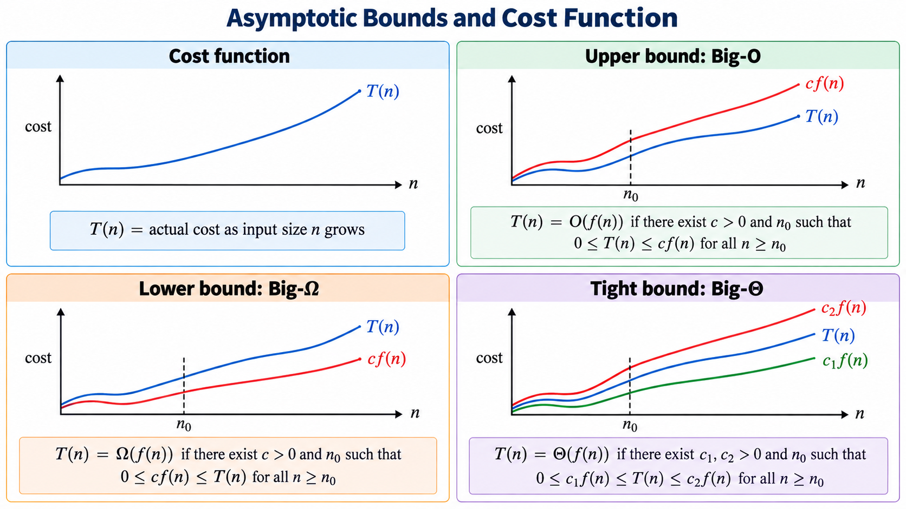
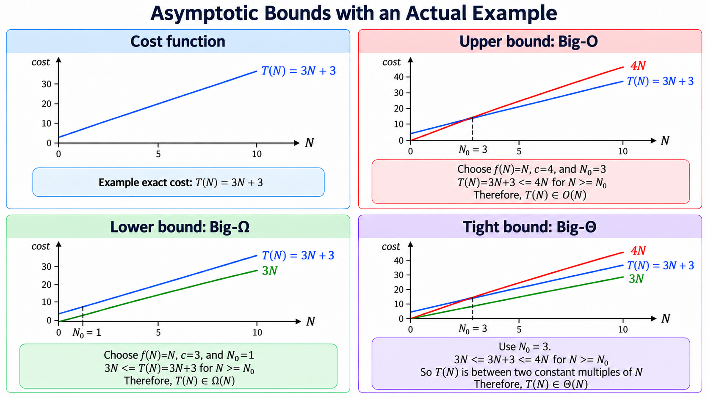

What problem are we solving?
Different algorithms can solve the same task.
Timing one run is not enough: machines and inputs differ.
Algorithm analysis asks: how does cost grow as the input grows?
Example question: if the input doubles, does the work double, quadruple, or only add one more step?
Learning goals
Choose the input size: usually written as \(N\)
Define a cost model: what counts as one step?
Write an exact cost function: \(T_{\text{case}}(N)\)
Choose a case: best, worst, or average
Only then: summarize how that function grows
We count first. The growth notation comes later in this module.
The analysis workflow
Pick the input size \(N\).
Pick the cost model: comparisons, loop iterations, assignments, etc.
Pick the case: best, worst, or average.
Derive the cost function, such as \(T_{\text{worst}}(N)=3N+3\).
Summarize how that function grows for large \(N\).
Steps 1–4 are counting. Step 5 is where the growth notation appears.
Empirical analysis (measure it)
Implement the algorithm, run it, and time it.
Pros: real measurements, easy to demo.
Cons: depends on hardware, compiler, OS, cache, and input choices.
C++ timing sketch:
#include <chrono>
using clock = std::chrono::high_resolution_clock;
auto start = clock::now();
// run algorithm
auto stop = clock::now();
auto ms = std::chrono::duration_cast<std::chrono::milliseconds>(stop - start).count();
std::cout << ms << " ms\n";Theoretical analysis (reason about it)
Estimate the cost without running the program.
Count how many basic steps the algorithm does as \(N\) grows.
Hardware independent: focuses on the algorithm itself.
Outcome: a counting function \(T(N)\), which we later summarize as a growth class.
Three things we must define
| Term | Meaning | Example |
|---|---|---|
| Input size | How large the input is | \(N\) array elements |
| Cost model | What we count as work | comparisons |
| Cost function | Work as a function of size | \(T_{\text{worst}}(N)=N\) |
Define all three before talking about growth rates.
What is the input size \(N\)?
Array algorithm: \(N\) = number of elements.
String algorithm: \(N\) = number of characters.
Graph algorithm: often two sizes, \(V\) vertices and \(E\) edges.
Choose the size that actually controls the amount of work.
What is a cost model?
A cost model says what counts as one basic step.
Linear search: count key comparisons,
arr[i] == key.Sorting: often count element comparisons and swaps.
Loop examples: count iterations or constant-time statements.
Different reasonable models may change constants, but usually not the final growth class.
What counts as a basic step?
We approximate by counting constant-time operations.
assignment:
x = 10arithmetic on fixed-size values:
x + ycomparison:
a > b,a == barray indexing:
arr[i]
Not constant: loops, recursion, copying long strings, or resizing arrays.
What is a cost function?
\(T(N)\) means time cost as a function of input size.
\(S(N)\) means extra space cost as a function of input size.
\(T(N)\) is an exact count, not yet a growth class. For example: \(T(N)=3N+3\).
Our next job is to derive functions like this by counting. Simplifying them comes after.
The standard for-loop pattern
for (int i = 0; i < N; ++i) {
// body
}Count these parts separately:
Initialization:
int i = 0Condition check:
i < NBody: executes some statements
Increment:
++i
Why does the condition run \(N+1\) times?
Before the first iteration, we check:
i < N(1st check)Each iteration ends with
++i, then we check againAfter the \(N\)-th iteration,
ibecomes \(N\), we check one more time and fail\[\text{#condition checks} = N + 1\]
Exact count example (body is constant)
int sum = 0; // (A)
for (int i = 0; i < N; ++i) { // (B)
sum += 1; // (C)
}Count operations (one reasonable model):
(A) assignment: 1
(B) init: 1
(B) condition
i < N: \(N+1\)(C) body statement: \(N\)
(B) increment
++i: \(N\)\[T(N) = 1 + 1 + (N+1) + N + N = 3N + 3\]
Keep this exact form for now. We will simplify it soon.
General template for a single loop
T(N) = init
+ condition_checks
+ increments
+ body_cost_per_iter * #iterationsFor a typical loop with \(N\) iterations:
condition checks: \(N+1\)
increments: \(N\)
body: \(N \cdot (\text{cost per iteration})\)
The +1 matters for understanding, even though we often drop it at the end.
Nested loops: count inner work for each outer iteration
for (int i = 0; i < N; ++i) {
for (int j = 0; j < N; ++j) {
// constant work
}
}Inner loop does about \(N\) iterations for each outer iteration.
Outer loop does \(N\) iterations.
Total body executions: \(N \cdot N = N^2\).
If you want exact checks, each loop has \((N+1)\) condition checks. Understand the count first; the summary notation comes later.
Halving loops (why \(\log N\) appears)
int x = N;
while (x > 1) {
x = x / 2;
}Each iteration halves \(x\): \(N \to N/2 \to N/4 \to \cdots \to 1\)
How many times can we divide by 2 until we reach 1?
\[ \frac{N}{2^k} \le 1 \Rightarrow 2^k \ge N \Rightarrow k \ge \log_2 N \]
So the loop runs about \(\log_2 N\) times.
Cases are about which input happens
| Case | Question | Linear search example |
|---|---|---|
| Best | What input is easiest? | key at index 0 |
| Worst | What input is hardest? | key missing or last |
| Average | What happens in expectation? | needs a probability model |
A case selects a version of the cost function: \(T_{\text{best}}\), \(T_{\text{worst}}\), or \(T_{\text{avg}}\).
Cases need separate cost functions
\(T_{\text{best}}(N)\): least work over inputs of size \(N\)
\(T_{\text{worst}}(N)\): most work over inputs of size \(N\)
\(T_{\text{avg}}(N)\): expected work, after assuming an input distribution
For the same algorithm, these functions can be different.
Example: linear search counts
int linearSearch(const int* arr, int size, int key) {
for (int i = 0; i < size; ++i) {
if (arr[i] == key) return i;
}
return -1;
}Input size: \(N = \text{size}\); cost model: runs of
arr[i] == keyBest case (key at index 0): \(T_{\text{best}}(N)=1\)
Worst case (key last or missing): \(T_{\text{worst}}(N)=N\)
Average case: about \(N/2\), given a probability model
Three inputs, three functions. Next we describe how such functions grow.
Why asymptotic notation?
Exact cost functions can include many constants.
For large \(N\), the dominant term matters most.
Asymptotic notation describes growth, not seconds on a clock.
\[ 7N^2 + 20N + 100 \quad \text{grows like} \quad N^2 \]
The three bounds
| Notation | Meaning | Question it answers |
|---|---|---|
| \(O(f(N))\) | upper bound | Is the growth no more than \(f(N)\)? |
| \(\Omega(f(N))\) | lower bound | Is the growth at least \(f(N)\)? |
| \(\Theta(f(N))\) | tight bound | Is \(f(N)\) the exact growth? |
Prefer \(\Theta\) when you know the tight growth.


From a case to a bound
Choose the case, for example the worst case.
Count exactly: our loop gave \(T(N)=3N+3\); linear search gave \(T_{\text{worst}}(N)=N\).
Drop constants and smaller terms.
Report the growth: \(\Theta(N)\) in both examples.
Because \(\Theta(N)\) is tight, it also implies \(O(N)\) and \(\Omega(N)\). Careful counting explains where the formula comes from; asymptotic notation summarizes it.
How do I know my bound is tight?
\(\Theta(f)\) means both directions hold at the same \(f\): \(T \in O(f)\) and \(T \in \Omega(f)\).
If your count is exact, you already have both. Drop constants and lower terms, and that is the tight bound.
\(T(N)=3N+3\) is exact \(\Rightarrow T(N) \in \Theta(N)\).
\(T(N) \in O(N^2)\) is also true, but loose: \(3N+3 \notin \Omega(N^2)\), so it is not \(\Theta(N^2)\).
Give the tightest simple bound unless the question asks otherwise.
When do I use \(O\), \(\Omega\), or \(\Theta\)?
| What you actually know | Say | Example |
|---|---|---|
| An exact count for one case | \(\Theta\) | \(T_{\text{worst}}(N)=N \Rightarrow \Theta(N)\) |
| Only “no more than”, or one claim covering every input | \(O\) | linear search is \(O(N)\) |
| Only “no less than” | \(\Omega\) | any comparison sort needs \(\Omega(N \log N)\) |
In this course most answers are \(\Theta\), because we count first.
Why we sometimes can only say \(O\)
Linear search: \(T_{\text{best}}(N)=1 \Rightarrow \Theta(1)\), and \(T_{\text{worst}}(N)=N \Rightarrow \Theta(N)\).
Average case: about \(N/2\) comparisons \(\Rightarrow \Theta(N)\), the same growth as the worst case, because constants are dropped.
“Linear search is \(\Theta(N)\)” is wrong: some inputs finish after 1 comparison.
“Linear search is \(O(N)\)” is right: no input ever costs more than \(N\).
Fix the case and you usually get a \(\Theta\). Speak about all inputs at once and often only \(O\) is available.
Common growth classes
\(\Theta(1)\): constant
\(\Theta(\log N)\): logarithmic
\(\Theta(N)\): linear
\(\Theta(N \log N)\): linearithmic
\(\Theta(N^2)\): quadratic
\(\Theta(2^N)\): exponential
The same growth names can be used with \(O\), \(\Omega\), or \(\Theta\).

Key simplification rules
Drop constants: \(7N + 3 \in \Theta(N)\)
Keep dominant term: \(N^2 + 100N + 5 \in \Theta(N^2)\)
Log base usually does not matter: \(\log_2 N\) and \(\log_{10} N\) differ by a constant factor.
The halving loop we counted ran about \(\log_2 N\) times, so it is \(\Theta(\log N)\).
Common confusion
Worst case is not the same thing as Big-O.
Best case is not the same thing as Big-Ω.
You can give an upper bound for a best-case function.
You can give a lower bound for a worst-case function.
In many courses, “Big-O analysis” often means “worst-case upper bound,” but those are two separate ideas.
Binary search: cases and functions
Requires a sorted array.
Each step checks the middle element.
If not found, the remaining search range is cut in half.
| Best case | key is the first middle checked | \(T_{\text{best}}(N) \in \Theta(1)\) |
| Worst case | keep halving until empty | \(T_{\text{worst}}(N) \in \Theta(\log N)\) |
Binary search: why the worst case is logarithmic
int binarySearch(const int* arr, int size, int key) {
int low = 0, high = size - 1;
while (low <= high) {
int mid = low + (high - low) / 2;
if (arr[mid] < key) low = mid + 1;
else if (arr[mid] > key) high = mid - 1;
else return mid;
}
return -1;
}Cost model: loop iterations or middle-element comparisons.
After \(k\) failed steps, about \(N/2^k\) elements remain.
Same halving argument as our while-loop example.
Binary search as a recurrence (optional math view)
-
In the worst case, each step halves the remaining elements:
\[ T(N) = T(N/2) + c \]
Stop when \(N/2^k \le 1\):
\[ 2^k \ge N \Rightarrow k \ge \log_2 N \]
So \(T(N) \in \Theta(\log N)\).
Selection sort
For each position \(i\), find the smallest element in the remaining unsorted part.
Swap it into position \(i\).
Repeat until sorted.
void selectionSort(int* arr, int size) {
for (int i = 0; i < size - 1; ++i) {
int min = i;
for (int j = i + 1; j < size; ++j) {
if (arr[j] < arr[min]) min = j;
}
if (min != i) std::swap(arr[i], arr[min]);
}
}Counting comparisons (core idea)
The inner comparison is:
if (arr[j] < arr[min]) ...How many times does that comparison run?
When \(i = 0\): \(N-1\) comparisons
When \(i = 1\): \(N-2\) comparisons
...
When \(i = N-2\): 1 comparison
\[ (N-1) + (N-2) + \cdots + 1 = \frac{N(N-1)}{2} \]
Therefore comparisons are \(\Theta(N^2)\).
What does \(S(N)\) mean?
\(S(N)\) is extra memory used in addition to the input.
Local variables: constant space (\(\Theta(1)\)).
Extra arrays/buffers that scale with \(N\): linear space (\(\Theta(N)\)).
Examples
Linear search: \(S(N) \in \Theta(1)\)
Binary search (iterative): \(S(N) \in \Theta(1)\)
Mergesort: \(S(N) \in \Theta(N)\)
Swaps and space
Swaps happen at most \(N-1\) times ⇒ \(O(N)\)
Comparisons dominate ⇒ overall time \(\Theta(N^2)\)
Extra space is constant ⇒ \(S(N) \in \Theta(1)\)
Selection sort: cases
The loops do not stop early when the array is already sorted.
The comparison count is always \((N-1)+(N-2)+\cdots+1\).
So best, worst, and average comparison costs are all \(\Theta(N^2)\).
Swaps may differ by input, but comparisons dominate the time analysis.
\[ T_{\text{best}}(N),\ T_{\text{worst}}(N),\ T_{\text{avg}}(N) \in \Theta(N^2) \]
Why amortized analysis?
Sometimes worst-case per operation is misleading.
We care about the average cost over a sequence of operations.
Classic example: dynamic array resizing.
Dynamic array push (intuition)
Most pushes are \(O(1)\).
Occasionally resize: allocate bigger array and copy \(N\) items (cost \(O(N)\)).
If capacity doubles, expensive resizes are rare.
Result (common): average cost per push over many pushes is still \(\Theta(1)\) amortized.
Three common amortized methods (names to know)
Aggregate analysis: total work / number of operations
Accounting method: overcharge cheap ops to pay for expensive ones later
Potential method: define a potential function \(\Phi\) to store “credit”
Summary
| Step | Answers this question | Linear search |
|---|---|---|
| Input size \(N\) | How big is the input? | array length |
| Cost model | What operation are we counting? | key comparisons |
| Case | Which input of size \(N\)? | worst: key missing |
| Cost function | How much work does that case do? | \(T_{\text{worst}}(N)=N\) |
| O / \(\Omega\) / \(\Theta\) | How does that function grow? | \(\Theta(N)\) |
Count first, then simplify. Cases pick the input; bounds describe the function.